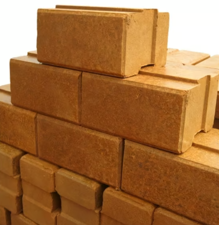
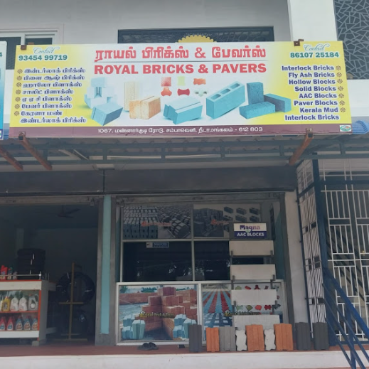
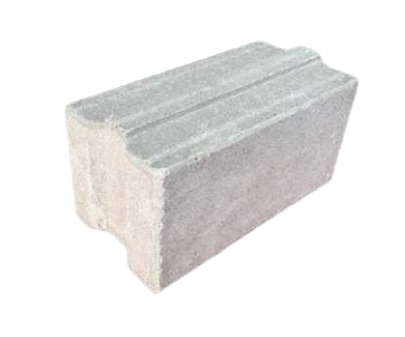
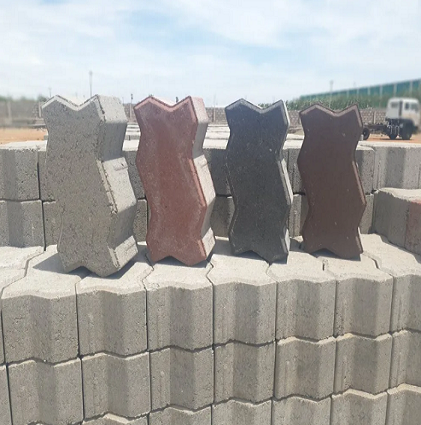
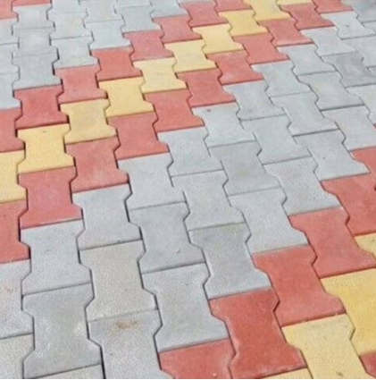
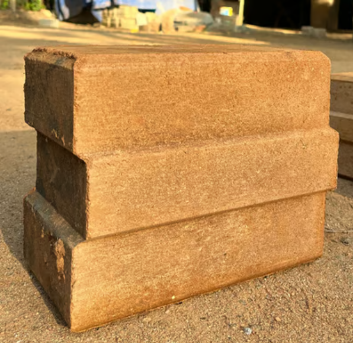
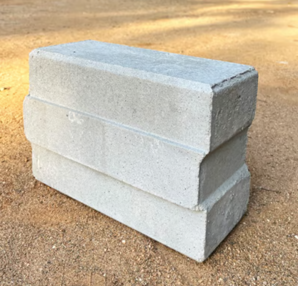
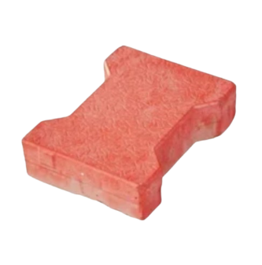

Building a strong foundation with Royal interlocking bricks and pavers
We are your trusted partner for high-quality interlocking bricks and construction solutions. Interlocking bricks are changing the way we build. These smart building blocks fit together tightly without using mortar, making construction faster and more affordable. Interlocking bricks also create strong, long-lasting structures that are better for the environment. In today’s world, where green building matters more than ever, interlocking bricks offer a simple and eco-friendly solution. Discover how interlocking bricks can make your next project easier and more sustainable.
About Royal Bricks and Pavers
Royal Bricks and Pavers is a leading manufacturer of premium interlocking bricks. We are committed to providing sustainable and durable interlocking bricks and pavers for fast and durable construction. We are located in 1067, Mannargudi Road, Sambaveli, NeedaMangalam, TamilNadu. Pin: 612803. Contact Number: 86107 25184 . We deliver good quality Interlock Bricks, Fly Ash Bricks, Hollow Blocks, Solid Blocks, AAC Blocks, Paver Blocks and Kerala Mud Interlocking Bricks
Our Products
Standard Interlocking Bricks
Standard Interlocking Bricks are a type of construction brick designed to interlock with one another without the need for mortar. They are commonly used in modern building practices, especially in cost-effective and environmentally friendly housing projects. Interlocking bricks are compressed stabilized earth blocks (CSEB) or concrete bricks shaped in a way that they fit together like puzzle pieces (similar to Lego blocks). This interlocking feature allows for easy alignment, reduced use of cement or mortar, and faster construction.
Heavy-Duty Interlocking Bricks
Heavy-duty interlocking bricks are engineered building blocks designed to handle higher loads and stresses compared to normal interlocking bricks. They are commonly used in pavements, industrial flooring, retaining walls, heavy-traffic areas, and load-bearing structures where durability and strength are essential. This bricks are specially shaped bricks that fit together (like puzzle pieces) without requiring much mortar. These Made from stronger materials (like high-grade concrete, laterite, or stabilized soil) and compressed at higher pressure to improve load-bearing capacity, density, and durability.
Decorative Interlocking Bricks
Decorative interlocking bricks are specially designed masonry units that fit together without the need for mortar (in many cases) due to their tongue-and-groove or notch-and-projection system. Unlike regular bricks, they have aesthetic patterns or textures on their exposed faces, making them both structural and decorative. Available in various textures, colors, and patterns (stone finish, rustic, geometric, embossed, etc.). This enhances the look of pavement without extra plastering or painting.
Soil Interlocking Bricks
Soil interlocking bricks (also known as interlocking compressed earth blocks, or ICEBs) are an environmentally friendly and cost-effective alternative to conventional fired clay bricks or concrete blocks. They are made primarily from soil (often a mix of laterite or sandy soil), cement, and water, and are compressed in a mold to form solid bricks that lock together without the need for mortar in vertical joints.
Cement Interlocking Bricks
Cement interlocking bricks (also known as interlocking concrete blocks or interlocking pavers, depending on the use case) are construction materials designed to interconnect with one another using a specific shape, reducing the need for mortar during assembly. They are popular in both structural and non-structural applications due to their durability, ease of installation, and cost-effectiveness. Cement interlocking bricks are pre-cast blocks made from a mixture of cement, sand, and sometimes gravel or fly ash.
Concrete Interlocking Bricks
Concrete interlocking bricks (also known as interlocking concrete pavers or interlocking paving blocks) are specially designed bricks that lock into each other without the need for mortar, forming a stable and durable surface. They are widely used for paving driveways, walkways, patios, parking lots, and even roads. Each brick has a unique shape (often like a zigzag or I-shape) that fits tightly with adjacent bricks. This interlock gives the pavement structural strength and flexibility.
AAC Blocks

AAC (Autoclaved Aerated Concrete) blocks are lightweight, precast, foam concrete building materials used for construction. They are made from a mixture of cement, lime, sand/fly ash, water, and an expanding agent (usually aluminum powder). The mixture forms air bubbles, making the blocks light, and then they are cured under high pressure and temperature in an autoclave.
Paver Blocks

Paver blocks are pre-cast concrete or stone units used for outdoor flooring. They are a popular choice for driveways, walkways, patios, parking areas, and landscaping because they are durable, versatile, and easy to install. Available in interlocking, zig-zag, square, rectangular, hexagonal, I-shape, and more.
Hollow Blocks

Hollow Blocks (sometimes called concrete masonry units or CMU) are rectangular blocks made from a mixture of cement, sand, and aggregates, molded into shape and cured. They are widely used in construction for walls, partitions, and foundations. They have one or more hollow cores (cavities), which make them lighter than solid blocks.
Contact Us
Get in touch with us for inquiries and orders.